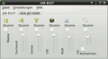
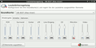
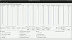
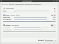
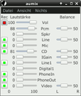
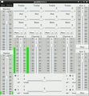
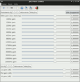
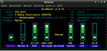
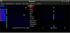

Mixer
Unter Ubuntu gibt es einige Mixer, Mischpulte, Equalizer und Effekt-Racks. Manche AudioPlayer bringen eigene Werkzeuge mit, es gibt aber auch eigenständige Programme. Diese Seite soll einen Überblick zu letzteren Anwendungen geben.
Die Menüeinträge beziehen sich auf Xubuntu und lauten ggf. bei anderen Desktops mit einen Anwendungsmenü geringfügig anders, so hieß beispielsweise der Bereich "Multimedia" bei GNOME früher "Unterhaltungsmedien".
Grafische Programme¶
Standard-Lautstärkeregelung¶
KDE, Xfce und MATE bringen neben Panel-Applets zur Lautstärkeregelung jeweils eine eigene Mixer-Anwendung mit.
| Standard Lautstärkeregelung verschiedener Desktops | |||
| Beschreibung und Eintrag im Startmenü | Befehl | Paket | Bildschirmfoto |
| KMix ist der Sound-Mixer für KDE. | kmix | kmix |  |
| "Multimedia -> KMix" | |||
| Der Xfce Standard-Mixer regelt den Sound von ALSA-Soundkarten. | xfce4-mixer | xfce4-mixer |  |
| "Multimedia -> Lautstärkeregelung" | |||
| Im LXDE-Panel ist ein Lautstärke-Regler integriert. Ein Mixer ist nicht vorhanden. Man kann bei Bedarf einen der unter Kommandozeile aufgeführten verwenden. | (entfällt) | lxpanel | |
 , dann "Paneleinstellungen -> Panel-Erweiterungen -> Lautstärkeregler" , dann "Paneleinstellungen -> Panel-Erweiterungen -> Lautstärkeregler" | |||
Weitere Programme¶
Neben den Standard-Anwendungen zur Lautstärkeregelung gibt es weitere Mixer, Mischpulte und zusätzliche Werkzeuge für verschiedene Soundsysteme.
| Mixer, Mischpulte, EQs | |||
| Beschreibung und Menü-Eintrag | Befehl | Paket | Bildschirmfoto |
| Das GNOME ALSA Mischpult ist ein vollständiger GTK-Ersatz für den Alsamixer. | gnome-alsamixer | gnome-alsamixer |  |
| "Multimedia -> GNOME ALSA-Mischpult" | |||
| PulseAudio Volume Control regelt die Lautstärke für einzelne Anwendungen. | pavucontrol | pavucontrol |  |
| "Multimedia -> PulseAudio-Lautstärkeregler" | |||
| aumix ist ein Mixer für das Open Sound System. Die GTK-Version von aumix enthält auch die unten aufgeführte ncurses-Version und lässt sich ebenfalls auf der Kommandozeile steuern. | aumix | aumix-gtk |  |
| "Multimedia -> aumix" | |||
| JackEQ ist ein Drei-Band-Equalizer mit vier Stereo-Eingangskanälen, zwei Dual-Stereo AUX-Wegen, sowie Master- und Monitor-Stereo-Ausgängen. | jackeq | jackeq |  |
| "Multimedia -> JackEQ" | |||
| JACK Rack ist ein Rack für LADSPA-Effekte. Unter anderem sind DJ- und Multiband-EQs vorhanden. | jack-rack | jack-rack |  |
| "Multimedia -> JACK Rack" | |||
Kommandozeile¶
Auch im Terminal stehen Sound-Mixer zur Verfügung.
| Mixer für die Kommandozeile | |||
| Beschreibung und Eintrag im Startmenü | Befehl | Paket | Bildschirmfoto |
| Alsamixer ist bei allen K-/X-/Ubuntu-Desktop-Systemen vorinstalliert. Es handelt sich dabei um einen ncurses-basierten ALSA-Mixer. | alsamixer | alsa-utils |  |
| amixer ist der Text-basierte Mixer für ALSA-Soundkarten. | amixer | alsa-utils | |
| Für (alle) Alsamixer gibt es das Equalizer Plugin Alsaequal. | alsamixer -D equal | ibasound2-plugin-equal | |
aumix ist ein ncurses Open Sound System-Mixer für die Kommandozeile. Für den Desktop-Gebrauch ist ein Wrapper-Skript xaumix im Paket enthalten, über das aumix in einem grafischen Terminal gestartet wird. Ein GTK-Frontend ist weiter oben aufgeführt. Bei Xubuntu und Mythbuntu teilweise vorinstalliert ("Multimedia -> aumix"). | aumix | aumix |  |
Links¶
Hercules DJ Console - Mischpulte, mit denen man Mixing-Programme kontrollieren kann
Mixxx - umfangreiches Werkzeug für DJs
- Erstellt mit Inyoka
-
 2004 – 2017 ubuntuusers.de • Einige Rechte vorbehalten
2004 – 2017 ubuntuusers.de • Einige Rechte vorbehalten
Lizenz • Kontakt • Datenschutz • Impressum • Serverstatus -
Serverhousing gespendet von